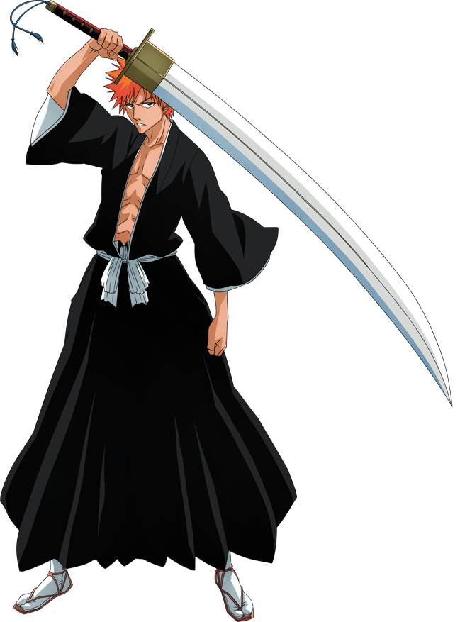

Ичиго Куросаки — человек, гемишт квинси с силами синигами и пустого. Сын Ишшина и Масаки Куросаки, старший брат Карин и Юзу. Муж Орихиме и отец Казуи.
Внешость
Первое, что бросается в глаза — это колючие рыжие волосы Ичиго, черта, из-за которой его высмеивали в течение многих лет. Он довольно высокий, худощавый подросток с персиковым цветом кожи и карими глазами. Он любит носить обтягивающую одежду. Он часто ходит в футболках с надписью «15», потому что его имя звучит, как «один-пять».
Когда Ичиго в духовном обличии, он носит стандартную форму синигами. Первоначально, его грудь пересекал толстый коричневый ремень, на котором держались ножны его меча, но позже он сменился на толстую ленту из четок. Несколько человек, включая Джуширо Укитаке, заметили удивительное сходство Ичиго и Кайена Шибы, бывшего лейтенанта тринадцатого отряда.
Характер
В детстве Ичиго считал мать важнейшим человеком в жизни; он всегда улыбался, когда она была рядом, и обычно держал её за руку. После каждого проигрыша в додзё он плакал и снова начинал улыбаться, как только Масаки приезжала забрать его. Когда Ичиго был совсем маленьким, он услышал от отца, что его имя означает «тот, кто защищает», и тогда он решил защищать маму. Когда родились его сёстры, он стал чаще посещать додзё, потому что количество людей, которых он желал защитить, росло: он хотел защищать близких и даже незнакомцев.
Будучи подростком, Ичиго упрям, вспыльчив, импульсивен и решителен. Несмотря на то, что Куросаки утверждает, что ему безразлично мнение других о себе, он старается сохранить имидж «крутого» — всегда хмурый, брови сведены к переносице. Ичиго понимает и признаёт, что с его характером он не сможет отказаться от схватки, если кто-то бросит ему вызов. Холодно называет учителей «инструкторами». Несмотря на это, он очень сострадателен и чуток, например, обещал принести душе погибшей девочки цветы и игрушечный самолёт. Он старается успокоить других, когда они чем-то расстроены.